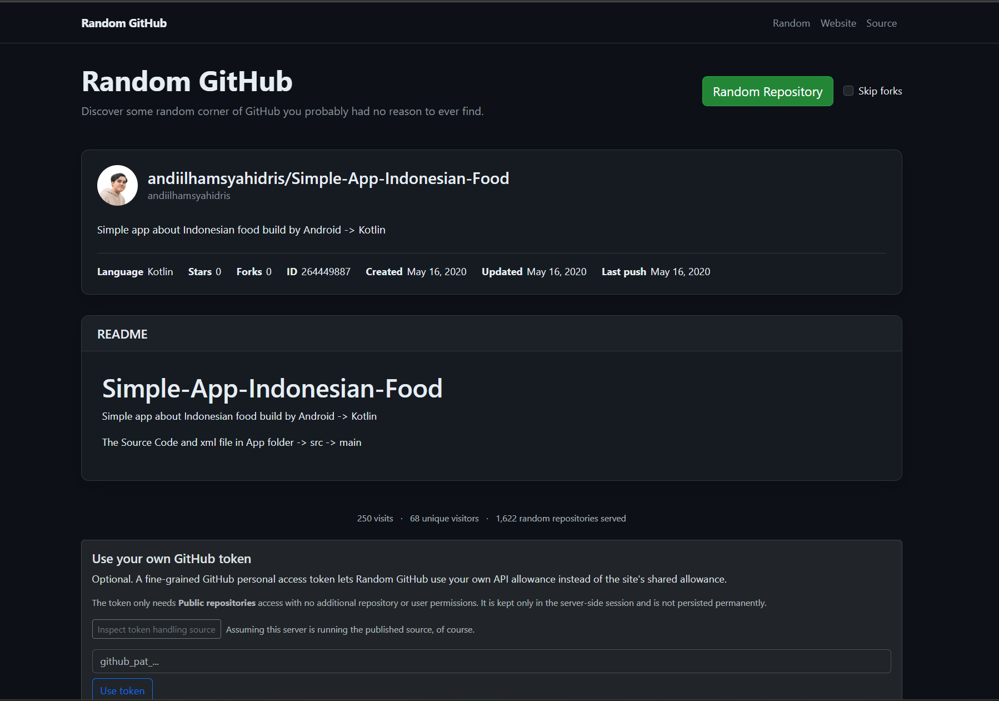

Do not call GitHub on every click
The shuffled repository pool keeps most picks cheap and reduces pressure on the shared API allowance.
projects/random-github
A small web app for stumbling into random public GitHub repositories and seeing whatever strange, empty, useful, abandoned, or mildly cursed thing happens to be there.
.NET 10 · ASP.NET Core Razor Pages · GitHub REST API · SQLite · HTML sanitization
The first version was a little project from 2021 based on a simple question: if I could jump to random public GitHub repositories, would I ever stumble into something genuinely interesting that I would never have searched for?
The answer is occasionally yes. The more common answers are empty repos, abandoned experiments, generated junk, and various forms of Git abuse. That is still part of the fun.
Years later the idea still seemed amusing, and it made more sense as a web app than the original project ever did. So I revived it as a small public site instead of leaving it as an old curiosity.

GitHub does not provide a convenient "give me one random repository" endpoint. Random GitHub instead chooses repository IDs across a configured range and asks GitHub for public repositories after those positions.
Several API batches are mixed into an in-memory pool, de-duplicated, shuffled, and then served from that pool. As it drains, the application occasionally refills it rather than making another GitHub API request for every click.
It is not mathematically uniform across every repository on GitHub. Repository IDs have gaps, which introduces some bias. For this project, that is fine. The goal is discovery, not cryptographic repository roulette.
It is random enough that I still find plenty of empty repositories and Git abuse, so the spirit of the experiment appears intact.
The selected repository page shows the obvious metadata — language, stars, forks, creation and update dates — but the README is usually the part that tells you what you actually found.
Random GitHub fetches the repository README when one is available, renders it, sanitizes the resulting HTML, and displays it directly on the result page. That makes a random pick useful without immediately sending the visitor back out to GitHub just to understand the project.
Forks can also be skipped when I want a better chance of landing on something that is at least pretending to be its own project.
The site normally uses a shared GitHub API token. That makes the normal experience frictionless, but it also means every visitor ultimately shares the same API allowance.
If that allowance is exhausted, a visitor can optionally provide a fine-grained GitHub personal access token that only needs public repository access. The token is kept in the server-side ASP.NET Core session and is not persisted as normal application data.
That keeps the site usable without turning "the shared token hit its limit" into a site-wide outage, while avoiding any need for GitHub account sign-in or broader permissions.
Random GitHub keeps a small amount of public usage data: total visits, unique visitors, and the number of random repositories served.
Mission Control telemetry can also record successful repository picks, but it does not send raw visitor IP addresses. When visitor correlation is enabled, the normalized address is converted into an HMAC-based identifier using a server-side secret before it leaves the application.
That gives me enough information to answer the useful question — "is anybody actually using this?" — without turning a silly random-repo site into a raw-IP analytics database.
If Random GitHub naturally selects its own repository, the application records a special self-pick event.
It does not cheat. There is no increased weighting and no secret branch that forces the joke. Random GitHub has to genuinely stumble into itself.
The selection pool is the main thing that keeps the experience from becoming "click button, wait on GitHub, repeat." A pick usually comes from already-fetched repository metadata, while refills happen separately as the pool gets smaller.
The shuffled repository pool keeps most picks cheap and reduces pressure on the shared API allowance.
Repository README content is rendered for convenience but sanitized before being placed into the site.
A visitor can use their own GitHub allowance without the token becoming normal persisted application data.
The picker is intentionally biased by GitHub's ID space. Interesting discovery matters more here than theoretical uniformity.
Random GitHub is deployed and basically does what I wanted it to do. Unless it breaks, it may stay exactly this small.
I could imagine improving the randomness or adding more discovery filters such as topics someday, but that is firmly in the "if I get very bored" category.